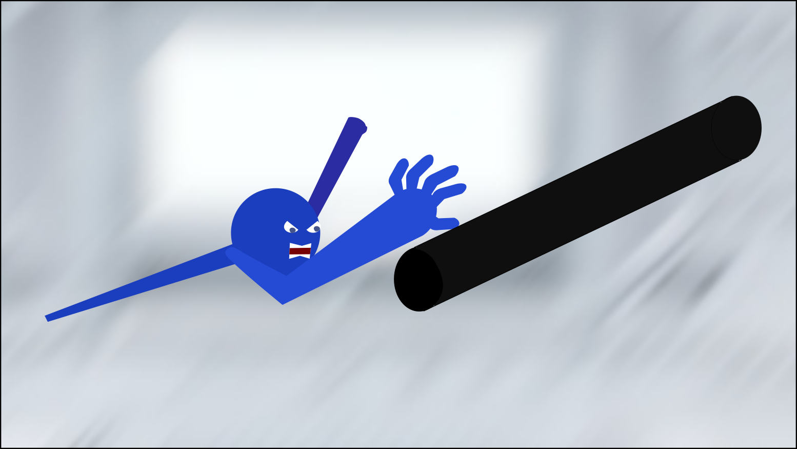

Étienne Letarte
Programmer
Vous parlez français? Cliquez ici.
My projects
Videogames
Aerodynamic
Bart College At Bart college, every student had a project to do in order to emulate a complete videogame production. We had 2 semesters (about 25 weeks) to complete the game. My project, Aerodynamic, is a platformer based on physics which requires a great amount of precision. The player can move his arms with the mouse and his legs with WASD. This project was my first experience in a full production.
Unity3D (C#)
Hinge Joints
Physics-based
JRPG Project
Bart College
This project in the style of a Japanese RPG was made in a single Bart college course. The game contains a full movement system, map interactions and battles in the style of Final Fantasy.
Unity 2D (C#)
Queues
Grid-based
Tiled
Programming
Friday manager
Cégep de Sherbrooke
This project was made during my studies in computer technology at Cégep de Sherbrooke. As a team of 4, we had to deliver a piece of software to an actual company. One of my team members was already employed at the Séminaire de Sherbrooke, and they needed a system to manage their students activities on friday afternoons. Our software, made in PHP (Laravel), made it easy for them to manage schedules, and for parents to locate carpoolers and chat with them from a website.
PHP Laravel
OpenMap
Twilio
Management
WallStories mobile app
Quinco & Co.
In 2021, I contributed to the numerous updates of Quinco & Co's new WallStories app. Customers could buy WallStories stickers at different locations, and stick it to a wall in their house. Then, they could download the app and activate the sticker with an activation code. The sticker would then animate using Vuforia, an AR technology. I contributed to the app's content updates during 2021.
Unity3D (C#)
Mobile
AssetBundles
Vuforia